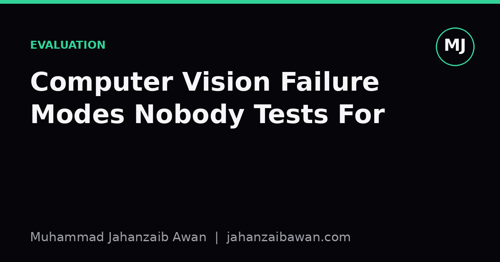
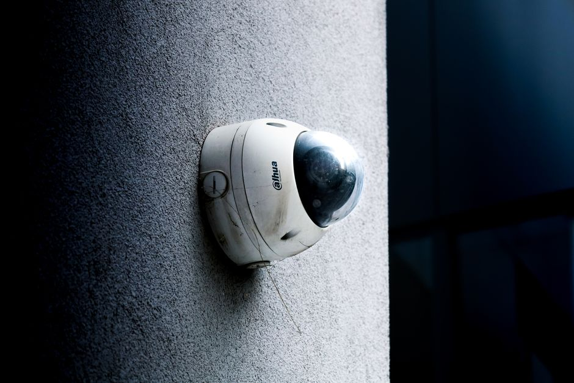

Computer Vision Failure Modes Nobody Tests For
Lighting and occlusion get all the attention in robustness testing, but the failures that actually ship to production are usually the ones nobody thought to write a test for.

The comfortable failure modes
Ask any computer vision practitioner to list the ways a model breaks and you get the same answer almost every time: lighting and occlusion. Both are real problems. A detector trained mostly on daylight images will degrade under sodium streetlamps or harsh backlight. A classifier that has only seen fully visible objects will stumble when half the object is behind something else. These are well understood, well documented, and crucially, easy to test for. You can build a validation set with dimmed images, add synthetic shadows, mask out thirty percent of a bounding box, and get a clean robustness curve to put in a slide deck.
That ease is exactly the problem. Lighting and occlusion are the failure modes we test for because they are convenient to simulate, not necessarily because they are the ones that cause the most damage in deployment. I have seen teams spend weeks tuning augmentation pipelines for brightness and contrast jitter while the model silently fails on something nobody thought to check, because nobody had to imagine it; it only showed up once the system met the real world.
The deeper issue is that lighting and occlusion are failure modes you can parametrise. You can turn a dial from zero occlusion to eighty percent occlusion and watch accuracy fall in a smooth curve. Most real failure modes do not have a dial. They are discrete, contextual, and often invisible until a specific combination of circumstances occurs that your test harness never encoded.
A worked example: the failures with no dial
Consider a pedestrian detector trained and validated on a dataset collected across a handful of cities, mostly in dry weather, mostly with cameras mounted at a consistent height. Run it through a standard robustness suite: vary brightness, add blur, mask parts of the body. Suppose it holds up reasonably well, dropping from ninety-four percent recall to eighty-six percent under the harshest occlusion setting. That looks like a defensible result.
Now put that same model behind a windscreen with a slightly different camera mount angle, three degrees off from training data, in light rain that causes faint droplet refraction on the lens. Recall might collapse to sixty percent, not because of lighting or occlusion in the tested sense, but because of a camera geometry shift combined with an optical artefact that resembles neither condition in the test suite. Nobody wrote a test for lens droplet refraction interacting with mounting angle, because nobody imagined that specific combination until it happened on a wet Tuesday in a location nobody had collected data from.
Other examples from the same family: a model that performs worse on people using mobility aids, not because of occlusion but because the aid changes the silhouette the network has learned to associate with a pedestrian. A quality control system that fails on products from a new supplier whose packaging reflects light at a slightly different angle, not dim or bright, just different. A medical imaging model that degrades on scans from a machine with a different sensor calibration, where the pixel intensity distribution shifts in a way that has nothing to do with lighting as commonly tested, but everything to do with instrument-level covariate shift.
What links these cases is that each failure depends on an interaction between variables that the test suite treated as independent. Lighting tests vary lighting while holding everything else fixed. Occlusion tests vary occlusion while holding everything else fixed. Real deployment varies camera angle, sensor type, demographic composition, weather, compression artefacts, and dozens of other factors simultaneously, and it is the joint combinations, not the marginals, that break models.

Why this is a testing problem, not a data problem
The instinctive response is to collect more diverse data. That helps, but it does not solve the underlying issue, because you cannot collect data for a scenario you have not thought to look for. The real gap is in how evaluation gets designed. Most robustness checklists are built by listing the variables that are easy to simulate synthetically: brightness, contrast, blur, occlusion masks, rotation. These get ticked off because they are cheap to generate and produce clean-looking metrics. Variables that are hard to simulate, like sensor-specific noise characteristics or the subtle correlation between a demographic group and a camera placement choice in the original data collection, rarely make it onto the list because nobody has an easy script to generate them.
This is where leakage-aware thinking becomes relevant well beyond its usual home in train-test splits. Just as a model can look good because its test set shares hidden structure with its training set, a robustness evaluation can look good because its stress tests share hidden assumptions with the training distribution. If your occlusion test only ever occludes objects that were already well represented in training, you are not testing occlusion robustness, you are testing a narrow slice of it that happens to be convenient.
A more honest approach starts by cataloguing the full data generating process behind deployment, not just the image itself. What cameras, what mounting positions, what compression pipelines, what downstream use of the output, what populations will actually appear in front of the lens. Then ask, for each of those factors, whether the current evaluation set has enough variation to say anything meaningful about it. Often the honest answer is no, and the next step is not a clever augmentation trick but an admission that a claim about robustness is currently unsupported.
Practical takeaway
Treat lighting and occlusion tests as a floor, not a ceiling. They catch the failures that are easy to catch precisely because they were easy to anticipate. The failures that matter most in production are usually the ones that emerge from an interaction nobody specified: a sensor, an angle, a population, a compression step, combined in a way the original dataset never captured. Before trusting a robustness report, ask what assumptions the stress tests inherited from the training data, and whether anyone has tried to break the model along an axis that was not already on the checklist. If the answer is no, the model has not been tested for failure, it has been tested for the failures someone already knew how to imagine.